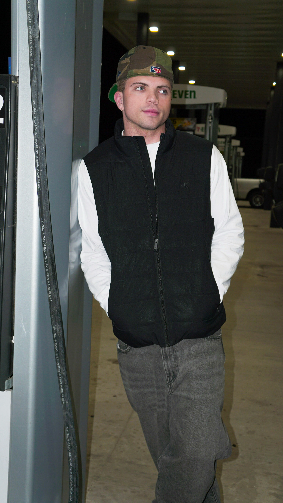

Information System with a concentration in Social Media and Marketing.
Project I did for one of my courses
Download my project Presentation (PDF)A short video I did for my film editing. This is a commercial video.
Hi, I’m Aaron Barreto — a current senior at Trevecca Nazarene University, where I focused on combining my passions for numbers and social media with sports, data analytics, and media storytelling doing classes such as graphic design and film. I love being active and playing sports such as basketball, soccer, pickleball, spikeball, skateboarding, and hiking. I also like to travel places and explore as much as I can. I do believe.
With experience in SQL, Python, and film editing, I’ve developed a skillset of curiosity that blends technical precision with creative communication. It allows for different perspective on each project I work on. My work includes building a analytics dashboard using MySQL and editing short films that explore narrative flow and emotion. and creating posters, ads, posts, and focusing on little details such as font
One of my proudest accomplishments was launching a customer loyalty program for my brand, Milk & Bennies. The project involved strategic planning, marketing, and analytics to improve customer retention.
I'm passionate about leveraging data to help sports teams make smarter decisions, uncover player performance trends, and communicate insights in compelling ways. Whether through clean code, engaging visuals, or clear insights, I thrive on making complex ideas accessible and impactful. Also While making it user-friendly as possible due to media background
Let’s connect — whether it’s about data, sports, or creative media!
Here you can take a look at my resume and and if you got any questions you can connect with me through my linkedin.